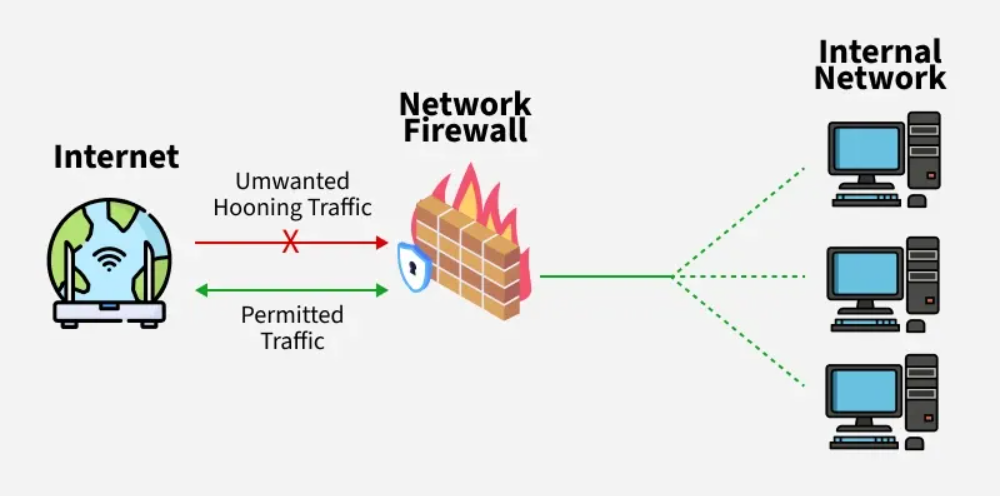
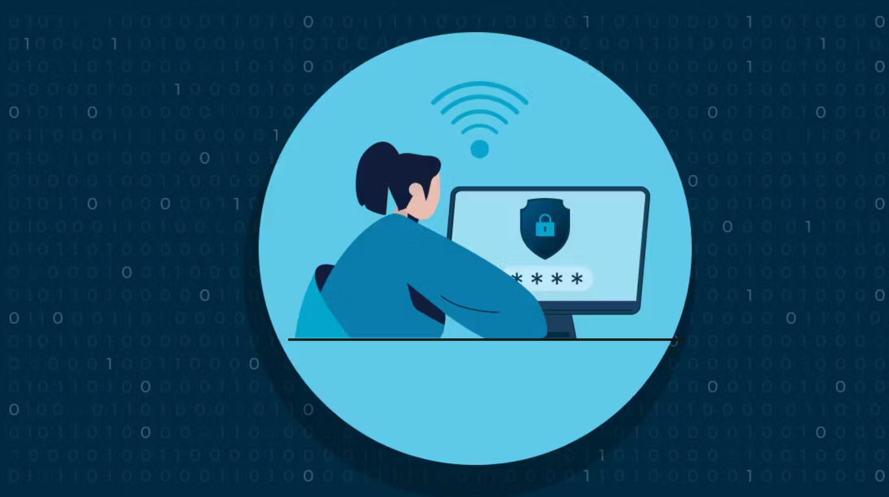

Topics Covered
Cybersecurity Awareness
Cybersecurity is the practice of protecting computers, networks, and data from unauthorized access or attacks. Being aware means knowing the types of threats that exist and how to avoid them.
Fake Emails & Phishing Protection
Phishing is when attackers send fake emails pretending to be a trusted source (bank, school, company) to trick you into giving personal information or clicking malicious links.

Information Security – Triangle of Security (CIA)
The CIA Triad is the foundation of information security. Hover over each corner of the triangle to explore each principle in detail.
Digital Footprint & Online Behavior
Your digital footprint is the trail of data you leave behind when using the internet — posts, searches, purchases, and even location data.
Passive Footprint: Data collected without you knowing (cookies, tracking pixels)

Tracking Website Usage – Excel Activity
We used a shared Excel sheet to log every website we visited during class, recording the URL, purpose, and whether it required login. This helped us analyze our own online habits and understand what data we share.

Cybersecurity in Networks
Networks connect devices together, making communication possible — but they also create entry points for attackers. Securing a network involves multiple layers of protection.

Cybersecurity in Schools
Schools store sensitive data: student records, grades, personal details, and financial information. Protecting this data is critical. Schools must teach digital safety and enforce strong security policies.
